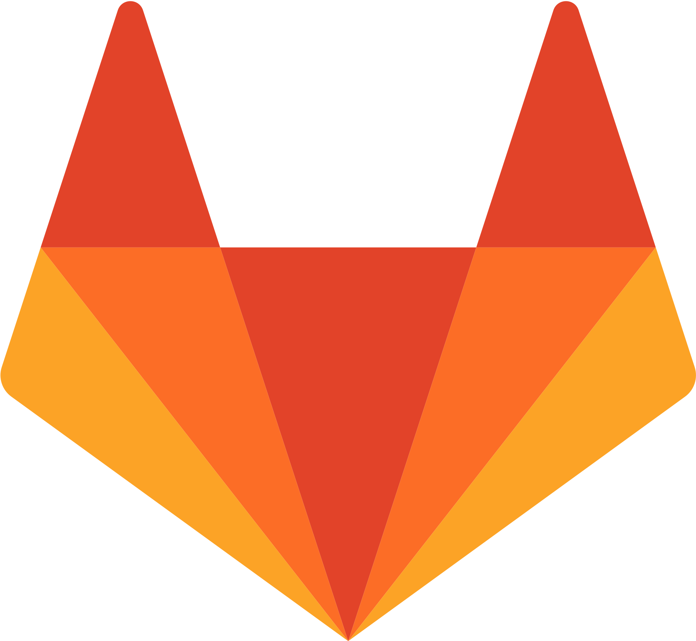

Code hosts
GitHub, GitLab, Gitea and Gerrit, self-hosted or cloud. Whole groups and organizations sync recursively, filtered by topic, with forks or archived repositories excluded.



Search and explore code. On your own infrastructure.
Self-hosted code search · MCP server built in
Built-in MCP server
Sherlock speaks the Model Context Protocol, so your assistant searches every indexed repository directly. Create an API key under Settings → API Keys, then register the server:
$ claude mcp add --transport http sherlock \
https://your-sherlock-host/api/mcp \
--header "Authorization: Bearer YOUR_KEY"
search_code get_file list_repos ask_codebase
retryDelivery at deliver.ts:42. It backs off exponentially
and gives up after five attempts.
What it does
Sherlock indexes the repositories you point it at and makes them searchable by regular expression and by symbol, across every branch you choose to index.
GitHub, GitLab, Gitea and Gerrit, self-hosted or cloud. Whole groups and organizations sync recursively, filtered by topic, with forks or archived repositories excluded.

Regular expressions, symbol lookup and filters over repository, language and file path, answered by a vendored Zoekt.
Microsoft Entra ID, GitHub, Google, email codes, or email and password. Off by default; a single environment variable turns it on.
Connections live in a JSON file under version control instead of being clicked together in the UI. Sherlock re-reads it when it changes.
Private by design
Sherlock runs entirely on your own hardware: no repository content, no query, and no telemetry leaves the machine you deploy it on. Analytics are disabled by default, and there is no public cloud, update feed or upstream analytics key behind it.
/data volumenpm audit in CI{
"connections": {
"my-gitlab": {
"type": "gitlab",
"url": "https://gitlab.example.com",
"groups": ["my-group"],
"token": { "env": "GITLAB_TOKEN" },
"exclude": { "archived": true, "forks": true }
}
}
}Get started
Build the image and run it with a volume for persistent storage. The container starts its own PostgreSQL and Redis unless you point it at external ones.
$ git clone https://github.com/explore-de/sherlock.git && cd sherlock
$ docker build -t sherlock:local .
$ docker run --name sherlock -p 127.0.0.1:3000:3000 -v sherlock-data:/data sherlock:localDescribe what to index in a config file and point CONFIG_PATH at it. Use a dedicated service account token with exactly the read access you intend to expose.
Set SOURCEBOT_AUTH_ENABLED=true and configure a provider. The first user to sign in owns the organization.
Open localhost:3000 and start digging. For shared deployments, put HTTPS in front before exposing it.
Read more: Configuration Declarative config Authentication AI search